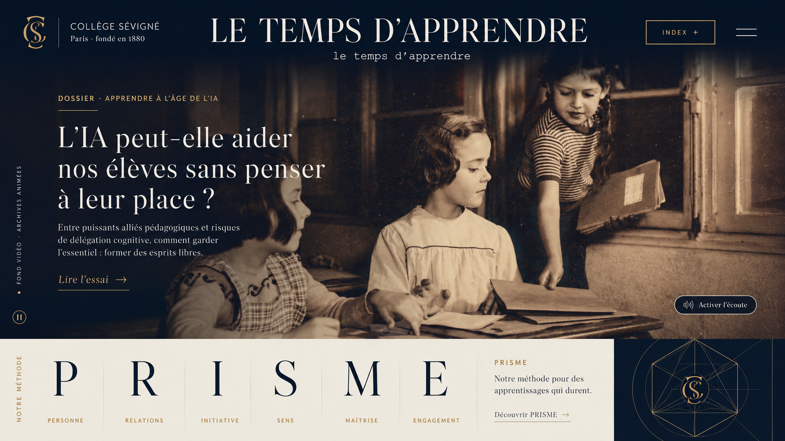

DOSSIER · APPRENDRE À L’ÂGE DE L’IA
L’IA peut-elle aider nos élèves sans penser à leur place ?
À mesure que les machines savent écrire, raisonner et expliquer, l’école doit apprendre aux élèves ce qu’ils ne doivent pas déléguer.
Lire l’essai →
UNE REVUE DU COLLÈGE SÉVIGNÉ
le temps d’apprendre_
Penser l’école depuis l’école.
DOSSIER · APPRENDRE À L’ÂGE DE L’IA
À mesure que les machines savent écrire, raisonner et expliquer, l’école doit apprendre aux élèves ce qu’ils ne doivent pas déléguer.
Lire l’essai →FOND VIDÉO · ARCHIVES ANIMÉES
↓01 · APPRENDRE
Une responsabilité nouvelle : rester l’auteur de son apprentissage.
03 · TRANSFORMER
UNE MÉTHODE DE LITTÉRATIE COGNITIVE DE L’IA
Utiliser l’intelligence artificielle sans lui déléguer l’apprentissage.
Mobilise d’abord tes propres connaissances.
Produis une première réponse sans IA.
Utilise l’IA pour questionner, expliquer, contredire ou tester.
Évalue ce qu’elle propose : juste, faux, pertinent, vérifiable ?
Améliore toi-même ton travail à partir de ce que tu retiens.
Sans IA, restitue le raisonnement et prouve que tu as compris.
La machine peut éclairer la pensée. Elle ne doit pas en devenir le substitut.
LES IDÉES
DIRIGER · 8 MIN
Le premier dit qui dirige. Le second révèle qui influence. Transformer une institution exige de connaître les deux.
Lire →ÉVALUER · 6 MIN
Lorsque l’IA peut produire le devoir, l’oral court peut rendre visible le raisonnement de l’élève.
Lire →AILLEURS · À VENIR
Interdire, encadrer, généraliser : comparer les doctrines qui émergent à l’international.
DOSSIER EN PRÉPARATION06 · PENSER
« Travaillons à bien penser : voilà le principe de la morale. »
Une école ne transmet pas seulement des réponses. Elle forme une manière de regarder, de distinguer et de juger.